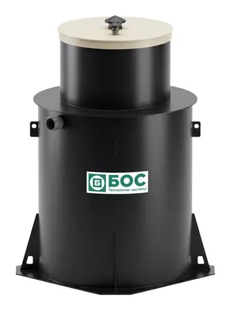
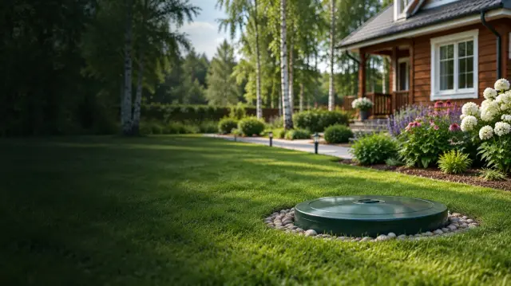
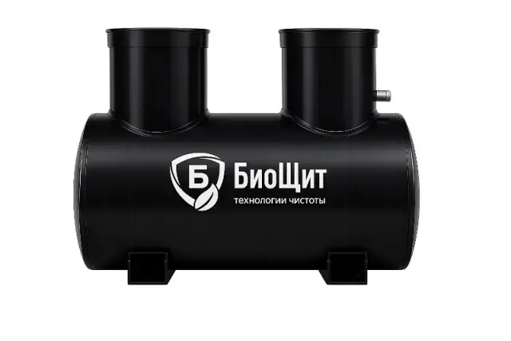
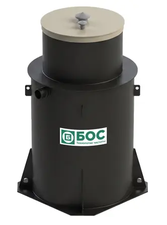
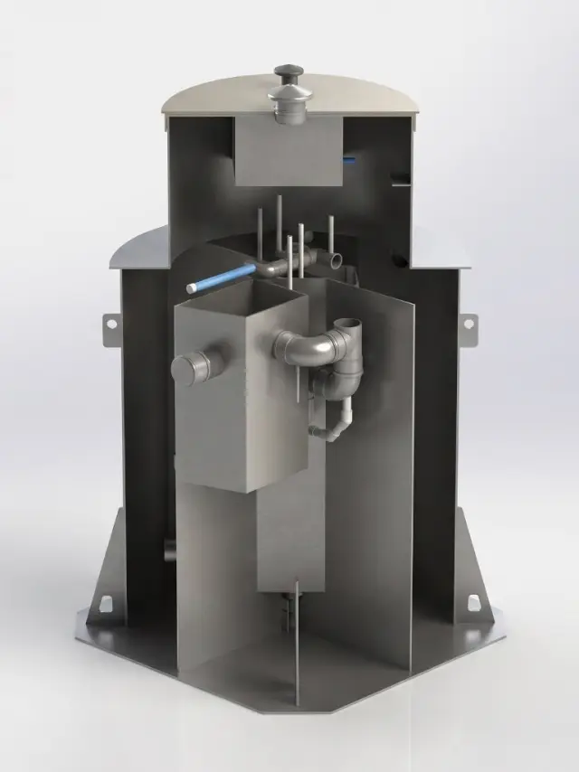
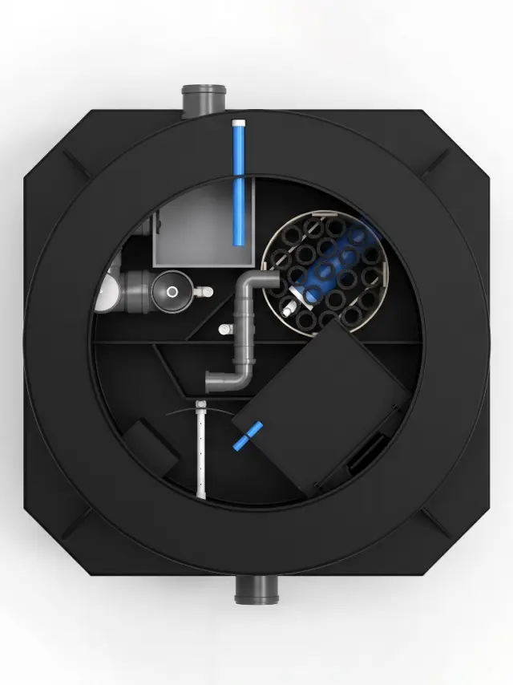

Серия БОС
от 83 500 ₽ станция
- От 400 до 1 600 л/сутки, на 2–10 человек
- Степень очистки 98%, без запаха
- Залповый сброс до 730 л

ЧЕЛЯБИНСК · ЕКАТЕРИНБУРГ · СВОЁ ПРОИЗВОДСТВО
Станции БОС и БиоЩит собственного производства: без запаха, без откачки, в любой грунт. Подберите модель по числу жильцов — цена видна сразу.
СТАНЦИИ И ЦЕНЫ
Цены станций — с сайта компании. Стандартная установка — от 40 000 ₽, замеры бесплатные, сумма фиксируется договором.

от 83 500 ₽ станция

от 42 000 ₽ станция

от 40 000 ₽
На сайте есть калькулятор производительности и залпового сброса по ГОСТ Р 70707-2023 — поможем посчитать по телефону. Спросить цену →
КАЛЬКУЛЯТОР
Двигайте ползунок — цена считается сразу. Телефон спросим только если захотите точную смету.


СВОЁ ПРОИЗВОДСТВО
НАШИ РАБОТЫ
Изображения с сайта компании. Нажмите, чтобы увеличить.
КАК МЫ РАБОТАЕМ
Выезжаем на участок, смотрим грунт и место под станцию.
Фиксируем сумму договором. Оплата — по факту.
Штатная бригада аккуратно монтирует станцию и запускает её.
Станция работает без запаха и откачки, мы остаёмся на связи.
ГАРАНТИИ
На станции собственного производства.
Сумма фиксируется договором до начала работ.
Штатные монтажники с 10-летним опытом, любой грунт.
ВОПРОСЫ
Максимальный объём стоков, который станция переработает за сутки, сохраняя качество очистки. Зависит от числа проживающих.
Объём стоков, который приёмная камера примет за час без ухудшения очистки: утром и вечером нагрузка выше, когда одновременно работают краны, душ и стиральная машина.
Стандартная установка — от 40 000 ₽. Замеры бесплатные, сумма фиксируется договором.
Станции работают без откачки и без запаха и не требуют постоянного контроля.
ЗАЯВКА
Оставьте телефон — перезвоним и договоримся о выезде. Подбор из калькулятора подставится сам.
8 (800) 500-59-84+7 (351) 700-80-09 zipo-a@yandex.ruЧелябинск, Екатеринбург и области